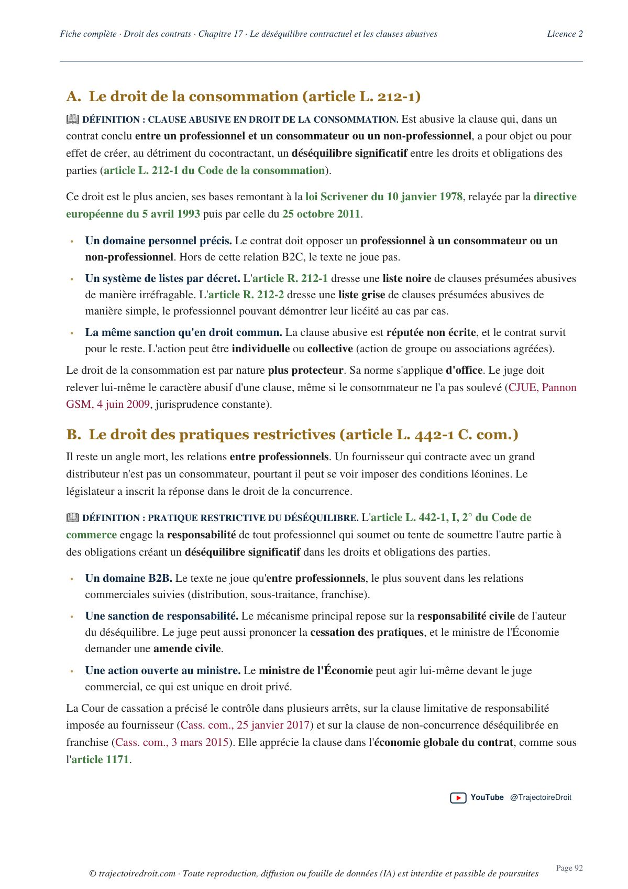

L'arrêt Tocqueville expliqué simplement
L'arrêt Tocqueville a été rendu le 13 octobre 1998 par la première chambre civile de la Cour de cassation, sous le numéro de pourvoi 96-21.485, publié au Bulletin. Il pose, pour la première fois depuis le Code civil de 1804, qu'un contractant victime d'un manquement grave peut mettre fin au contrat de sa propre initiative, sans attendre l'autorisation préalable du juge, à condition d'en assumer les conséquences si sa décision se révèle injustifiée.

Le principe posé par la Cour de cassation
Cet arrêt tranche une question que le Code civil de 1804 n'avait encore jamais réglée aussi clairement, celle du sort d'un contrat quand l'une des parties se comporte si mal que l'autre ne veut plus attendre le juge pour y mettre fin.
La Cour de cassation répond que la gravité du comportement d'un contractant peut justifier que son partenaire rompe le contrat par sa seule décision, à ses risques et périls. Cette expression revient tout au long de la fiche, donc autant la comprendre tout de suite. Rompre à ses risques et périls veut dire que la partie qui décide seule engage sa responsabilité si le juge, saisi ensuite par l'autre partie, estime que la rupture n'était pas justifiée.
Avant cet arrêt, l'ancien article 1184 du Code civil semblait imposer un passage obligé devant le juge pour résoudre un contrat inexécuté. La Cour de cassation admet ici, pour la première fois, une solution que la doctrine attendait depuis longtemps, et que la réforme de 2016 finira par transformer en règle écrite.
Cette solution te sert dans presque tous les exercices de droit des contrats dès que le sujet touche à l'inexécution, à la résolution ou à la rupture d'une relation contractuelle.
Retiens trois choses de cet arrêt. La gravité du comportement d'un contractant permet à l'autre de rompre le contrat sans passer par le juge au préalable. Cette rupture s'exerce à ses risques et périls, donc son auteur devra convaincre le juge de sa légitimité si elle est contestée. Enfin, un délai de préavis accordé au fautif n'efface pas la gravité de ses manquements.
Un anesthésiste-réanimateur exerce depuis le 1er juillet 1980 à la Clinique des Ormeaux, au Havre.
Avec trois confrères réunis en société civile de moyens, il obtient l'exclusivité de sa spécialité dans la clinique pour trente ans, contre l'acquisition d'actions de la société.
Malgré des mises en demeure, il continue de consulter hors de la clinique et multiplie les incidents, au point de compromettre la santé de patients.
La Cour de cassation valide la rupture décidée par la clinique sans intervention préalable du juge.

Fiche complète
Droit des contrats L2
Les faits, un médecin exclu de sa clinique après quinze ans de collaboration
Le médecin, anesthésiste-réanimateur, exerce depuis le 1er juillet 1980 au sein de la Clinique des Ormeaux, au Havre. Par un contrat du 30 janvier 1986, à effet au 1er janvier de la même année, la clinique lui accorde, en même temps qu'à trois autres anesthésistes réunis avec lui dans une société civile de moyens appelée le Groupement médical anesthésique des Ormeaux, l'exclusivité des actes de leur spécialité pour une durée de trente ans. En contrepartie, il acquiert des actions de la société qui exploite la clinique.
Le contrat impose au médecin de pratiquer tous les actes de sa profession à l'intérieur de la clinique. Il n'en tient pourtant pas compte. Il continue de consulter à l'extérieur, malgré une mise en demeure de respecter cette clause, c'est-à-dire une lettre officielle qui le somme de s'y conformer, ce qui oblige certains de ses patients à sortir de la clinique pour être suivis ailleurs.
Plusieurs chirurgiens se plaignent par lettre de son comportement, notamment de son manque de disponibilité lorsqu'il est de garde. En 1993, 1994 et 1995, des incidents plus graves surviennent, certains liés à un manque de disponibilité qui compromet la santé de patients opérés, d'autres à des accès d'énervement et de brutalité envers des malades. Le 22 décembre 1994, trente praticiens signent une pétition qui critique son comportement. La clinique lui adresse deux nouvelles mises en demeure, le 10 décembre 1993 puis le 16 septembre 1994, restées sans effet réel sur ses pratiques.
Le 27 janvier 1995, la clinique le convoque devant son conseil d'administration pour l'entendre sur son comportement professionnel. Trois jours plus tard, par une lettre du 30 janvier 1995, elle lui notifie sa décision de mettre un terme à leurs relations contractuelles, avec un préavis de six mois. Elle ne saisit aucun juge avant de prendre cette décision.
La procédure, du refus d'indemnisation au pourvoi en cassation
Le médecin conteste la rupture et réclame à la clinique une indemnité complémentaire de préavis ainsi que des dommages-intérêts. La cour d'appel de Rouen, par un arrêt du 11 septembre 1996, le déboute de l'ensemble de ses demandes. Il forme alors un pourvoi en cassation, c'est-à-dire un recours qui ne rejuge pas les faits mais vérifie que la cour d'appel a correctement appliqué la règle de droit.
Un pourvoi en cassation s'appuie sur des moyens, c'est-à-dire des arguments juridiques précis qui reprochent à la cour d'appel d'avoir mal appliqué la règle de droit. Le premier moyen du médecin soutient que le contrat, conclu conjointement avec ses trois confrères, ne pouvait être rompu qu'à l'égard des quatre médecins ensemble. Le deuxième moyen, le plus important pour cette fiche, reproche à la cour d'appel d'avoir validé une résiliation décidée par la clinique elle-même, sans décision judiciaire préalable, en violation des anciens articles 1134, 1147 et 1184 du Code civil. Trois autres moyens contestent, sans succès, la façon dont les juges du fond ont apprécié la gravité de ses manquements, une appréciation des faits que la Cour de cassation ne remet en principe jamais en cause.
Le vrai problème de droit
Le problème posé à la Cour de cassation tient en une question. Un contractant peut-il, en raison de la gravité du comportement de son partenaire, mettre fin unilatéralement au contrat sans recourir au préalable à une résolution judiciaire ?
Le médecin s'appuie sur l'ancien article 1184 du Code civil, qui prévoyait que la condition résolutoire est toujours sous-entendue dans les contrats synallagmatiques, c'est-à-dire ceux où chaque partie s'engage envers l'autre, et que la résolution doit être demandée en justice. Selon lui, la clinique n'avait donc pas le droit de rompre seule, même face à des fautes graves, sans obtenir d'abord une décision de justice.
La clinique répond que l'attendre aurait été absurde. Un contrat gravement inexécuté ne doit pas forcément survivre jusqu'à ce qu'un juge, saisi après coup, en constate l'échec. La Cour de cassation doit choisir entre la lettre de l'ancien article 1184 et le besoin pratique de rompre vite un contrat devenu intenable.
La solution de la Cour de cassation
La Cour de cassation rejette le pourvoi. Voici l'attendu à connaître, car le citer dans une copie montre tout de suite au correcteur que tu maîtrises l'arrêt.
L'attendu de l'arrêt Tocqueville
« Mais attendu que la gravité du comportement d'une partie à un contrat peut justifier que l'autre partie y mette fin de façon unilatérale à ses risques et périls, et que cette gravité, dont l'appréciation qui en est donnée par une autorité ordinale ne lie pas les tribunaux, n'est pas nécessairement exclusive d'un délai de préavis. »Cass. 1re civ., 13 octobre 1998, n° 96-21.485, arrêt Tocqueville
Décortique cette phrase, elle contient trois idées à retenir séparément. D'abord, la gravité du comportement d'un contractant peut justifier une rupture décidée par l'autre partie seule, sans juge. Ensuite, cette rupture s'exerce à ses risques et périls. Celui qui décide seul devra assumer les conséquences si le juge, saisi ensuite, estime que la gravité n'était pas suffisante.
Enfin, un détail précis du dossier vient enrichir la règle. Le fait que le conseil de l'ordre des médecins n'ait sanctionné le médecin que d'un simple blâme, le 27 janvier 1996, ne suffit pas à écarter la gravité retenue par les juges du fond, car l'appréciation d'une autorité disciplinaire ne lie jamais les tribunaux civils.
Sur les autres moyens du pourvoi, la Cour de cassation confirme aussi que la cour d'appel pouvait retenir la gravité des manquements à partir des pièces du dossier, à savoir les lettres de la clinique, les témoignages des chirurgiens et la pétition des trente praticiens, sans avoir à motiver davantage sa décision. Cette appréciation des faits relève du pouvoir souverain des juges du fond, ce qui signifie que la Cour de cassation ne la remet jamais en cause tant qu'elle reste cohérente avec les pièces produites.
Réviser le droit des contrats sans t'éparpiller ?
Je t'offre mon guide « Réviser le droit sans s'épuiser », la méthode que suivent mes élèves pour retenir les grands arrêts au fil du semestre plutôt que de les découvrir la veille du partiel.
La portée, une troisième voie de sanction de l'inexécution
Avant Tocqueville, un contractant confronté à l'inexécution de son partenaire disposait de deux voies. L'exécution forcée, qui consiste à obliger le débiteur à exécuter malgré lui, et la résolution judiciaire, prévue par l'ancien article 1184, qui oblige à saisir le juge et à attendre son jugement avant que le contrat prenne fin. Cet arrêt ouvre une troisième voie, la résolution unilatérale extrajudiciaire, décidée par le créancier seul, sous le contrôle éventuel et postérieur du juge.
Cette troisième voie répond à un besoin concret. Certains manquements sont si graves qu'attendre une décision de justice, parfois plusieurs années, ferait perdre tout son sens à la rupture. Le créancier victime de l'inexécution peut désormais agir vite, à condition d'accepter le risque d'avoir à se justifier ensuite devant le juge si le débiteur conteste.
La Cour de cassation confirme et généralise cette solution dans un arrêt du 20 février 2001 (Cass. 1re civ., n° 99-15.170). Elle y précise que la règle joue peu importe que le contrat soit à durée déterminée ou indéterminée, et elle casse la décision d'une cour d'appel qui avait validé une rupture sans avoir vérifié elle-même si le comportement reproché atteignait le niveau de gravité exigé. Ce second arrêt montre que la gravité ne se présume jamais. Les juges du fond doivent la caractériser précisément avant de valider une rupture unilatérale.
La réforme du droit des contrats, issue de l'ordonnance du 10 février 2016, transforme cette solution jurisprudentielle en règle écrite. L'article 1224 du Code civil range désormais la résolution par notification du créancier parmi les trois voies possibles de résolution, aux côtés de la clause résolutoire et de la résolution judiciaire. L'article 1226 en fixe le régime précis. Le créancier peut résoudre le contrat par notification, à ses risques et périls. Sauf urgence, il doit d'abord mettre le débiteur en demeure de respecter ses engagements dans un délai raisonnable, en précisant expressément que la résolution suivra à défaut d'exécution. Si l'inexécution persiste, il notifie ensuite la résolution et ses motifs. Le débiteur garde alors la possibilité de saisir le juge à tout moment pour contester cette résolution, et c'est au créancier qu'il revient de prouver la gravité de l'inexécution qu'il invoque.
Ce dernier point mérite d'être souligné. La réforme inverse la logique par rapport à une résolution judiciaire classique. Dans une résolution judiciaire, le créancier demande au juge d'agir avant la rupture. Dans la résolution par notification héritée de Tocqueville, la rupture intervient d'abord, et le contrôle du juge n'intervient qu'après, seulement si le débiteur le saisit et conteste la décision.
La critique doctrinale
La doctrine a globalement salué cette solution, car elle correspondait à une pratique déjà répandue que la jurisprudence antérieure sanctionnait sans toujours convaincre. Rompre un contrat inexécuté sans attendre des années de procédure paraissait plus réaliste que d'imposer un passage systématique devant le juge.
Elle a cependant nourri une critique constante, celle de l'insécurité juridique qui pèse sur le contractant qui décide seul. La notion de gravité suffisante n'est définie par aucun texte avant 2016, et son appréciation reste concrète, au cas par cas, ce qui expose celui qui rompt à un risque réel de contentieux s'il s'est trompé sur le niveau de gravité atteint. La partie la plus prudente, avant la réforme, restait souvent tentée de saisir quand même le juge, ce qui limitait en pratique la portée de la solution. Cette prise de risque rappelle celle qui pèse déjà sur l'auteur d'une rupture fautive de pourparlers dans l'arrêt Manoukian, où le préjudice réparable reste volontairement limité pour ne pas décourager la liberté de rompre une négociation.
La réforme de 2016 répond en partie à cette critique en fixant une procédure précise, à savoir la mise en demeure préalable sauf urgence, la notification motivée, et le contrôle a posteriori du juge avec la charge de la preuve pesant sur le créancier. Une partie de la doctrine estime que cet encadrement rapproche finalement la résolution par notification d'une résolution judiciaire déguisée, tant les conditions de forme se sont multipliées depuis 1998. D'autres auteurs estiment au contraire que la réforme protège suffisamment le débiteur sans retarder la rupture pour le créancier.
Comment utiliser l'arrêt Tocqueville dans une copie
En copie, l'arrêt sert seulement si tu le cites au bon endroit. Voici comment t'en servir selon l'exercice.
Dans une dissertation. Tocqueville est ton arrêt clé dès que le sujet touche à la résolution du contrat, à l'inexécution contractuelle ou à l'évolution du droit des contrats depuis 2016. Montre comment il ouvre une troisième voie entre l'exécution forcée et la résolution judiciaire, puis comment la réforme la codifie aux articles 1224 et 1226. Pour un sujet plus large sur les limites de la force obligatoire du contrat, mets-le en relation avec l'arrêt Canal de Craponne, qui refuse au juge tout pouvoir de réviser un contrat déséquilibré, alors que Tocqueville, lui, laisse le créancier agir seul face à une inexécution grave.
Dans un commentaire d'arrêt. Si tu commentes Tocqueville lui-même, mets en valeur l'attendu de principe et ses trois composantes, la gravité du comportement, le risque assumé par celui qui rompt seul, et l'absence de lien avec l'appréciation d'une autorité disciplinaire. Tu trouveras la méthode complète sur ma page sur la méthode du commentaire d'arrêt et celle sur la fiche d'arrêt.
Dans un cas pratique. Dès qu'un contrat est gravement inexécuté par l'une des parties, demande-toi d'abord si le contrat a été conclu avant ou après le 1er octobre 2016. Avant cette date, applique directement la solution Tocqueville. Après, vérifie les conditions de l'article 1226, la mise en demeure préalable sauf urgence, puis la notification motivée. Tout ce raisonnement est repris dans ma fiche de droit des contrats L2, avec les autres grands arrêts du programme.
L'idée est toujours la même. Utilise l'arrêt comme un outil pour répondre à la question posée, jamais comme une simple référence à réciter. Cette différence sépare une copie moyenne d'une copie qui décroche la mention. Si tu veux qu'on travaille ta méthode ensemble, je propose aussi des cours particuliers de droit.
Les erreurs à éviter avec l'arrêt Tocqueville
- Confondre résolution et résiliation. La résolution anéantit le contrat rétroactivement, comme s'il n'avait jamais existé, alors que la résiliation met seulement fin au contrat pour l'avenir. Le texte de l'arrêt emploie indifféremment rupture et résiliation, mais la réforme de 2016 a consacré la notion de résolution par notification à l'article 1226. Dans une copie, utilise le vocabulaire du Code civil actuel.
- Croire que la rupture unilatérale dispense de toute preuve. Celui qui rompt seul reste exposé à un contrôle du juge. Depuis 2016, l'article 1226 met même expressément la charge de la preuve de la gravité sur ses épaules s'il est attaqué.
- Oublier l'arrêt du 20 février 2001. Il généralise la solution à tout type de durée contractuelle et rappelle que les juges du fond doivent caractériser eux-mêmes la gravité, sans se contenter d'un manquement allégué.
- Penser que le préavis exclut la gravité. L'arrêt le précise explicitement, un délai de préavis accordé à la partie fautive n'enlève rien à la gravité de ses manquements.
- Se tromper de fondement textuel. L'arrêt de 1998 vise les anciens articles 1134, 1147 et 1184 du Code civil. Les articles 1224 et 1226 n'existent pas encore, ils datent de la réforme de 2016.
Questions fréquentes
Que dit l'arrêt Tocqueville en une phrase ?
Quelle est la date et la juridiction de l'arrêt Tocqueville ?
L'arrêt Tocqueville est-il toujours d'actualité ?
Comment citer l'arrêt Tocqueville en copie ?
Pourquoi le préavis de six mois n'a-t-il pas empêché la Cour de retenir la gravité du comportement du médecin ?

Après Tocqueville, révise tout le programme de droit des contrats.
Ma fiche de droit des contrats L2 reprend chaque notion avec les grands arrêts qui la fondent. Les explications restent simples, pour que tu les comprennes à la première lecture et que tu t'en serves en commentaire comme en cas pratique.
Voir la fiche de droit des contrats L2